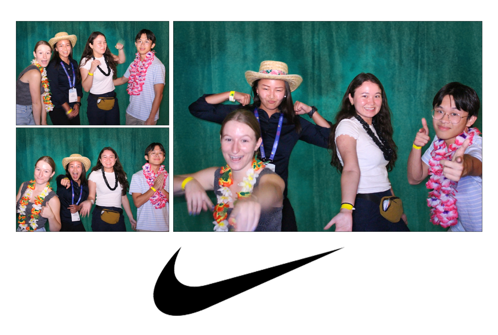

My GHC 22 Experience
September 30, 2022
Hi! My name is Grace Manning and I'm a 4th-year Computer Science major at UC Irvine. Since my
freshman year, I've been involved in a club called Women in Information & Computer Sciences
(WICS) at UCI, which has opened my eyes to the many opportunities available to me in the tech
industry.
Each year, Anita B.org holds an event called the Grace Hopper Celebration (GHC), which is a
week-long conference dedicated to women in computing. To learn more, visit this website.
This year, GHC was held in-person for the first time since the pandemic began. Since UCI is a
BRAID school, WICS members had the opportunity to attend GHC in-person or virtually through a
scholarship. I attended in-person GHC in Orlando, Florida with about 9 other WICS members, and
here's how it went…
Tuesday, September 20: Traveling to Orlando
Our travel day began at 5:30am, when the airport shuttles came to pick us up from UCI and take us to the John Wayne Airport.
 2022-09-20_airportshuttle.jpg)
 2022-09-20_airport.jpg)
getting picked up; waiting for our plane to board
Our plane boarded around 7am, and then we were off to Houston!
 2022-09-20_plane.jpg)
 2022-09-20_planefood.jpg)
I managed to sleep on the plane, but woke up for a Stroopwafel and Coke. My go-to plane snacks!
When we landed in Houston, some of us had a strong craving for Subway (some of us = Alisa and
I). We spent almost 30 minutes walking around the different airport terminals in search of a
Subway that was supposedly nearby, according to Google Maps. Eventually, we gave up and had to
get sandwiches somewhere else.
 2022-09-20_searchforsubway.jpg)
 2022-09-20_sandwiches_notsubway.jpg)
the search in action...and the defeat
After a nearly 4 hour layover, we boarded our flight to Orlando! I bought in-flight Wi-Fi to catch up on all those GHC-related emails and prep for the upcoming week. We also got to enjoy a beautiful sunset as we landed in Orlando, which I attempted to photograph from my aisle seat.
 2022-09-20_plane_emails.jpg)
 2022-09-20_sunset.jpg)
reading emails; Orlando sunset.
After we finally landed and made it to our hotel, my roommate Jaedyn and I were moved to a different hotel for the night due to overbooking. It made our travel day a bit longer, but we eventually settled in around 10pm and got ready for an even bigger day ahead.
Wednesday, September 21: GHC Day 1
Jaedyn and I left our hotel room at 6:50am to get checked in at our (actual) hotel and grab our
GHC badges. After leaving our bags at the hotel (and an unsuccessful attempt to check in), we
walked across the skybridge that was conveniently connected to the Orange County Convention
Center where GHC was held.
One thing I loved about Florida was the lush greenery all around us. While I personally did not
appreciate the 90% humidity, the plants sure did!
 2022-09-21_morning_exhaustion.jpg)
 2022-09-21_skybridge.jpg)
 2022-09-21_green.jpg)
sleep-deprived people; skybridge in the morning; very green plants!
We checked in and got our GHC badges a bit too early…it was 8am and things typically didn’t start until 9am. In this spare time, we explored the convention center and all it had to offer. The conference spanned across the length of the convention center, which was full of natural light! We also took a peek at the food court while it was still empty.
 2022-09-21_conference_center.jpg)
 2022-09-21_foodcourt.jpg)
convention center; thumbs up for the Food Court!
Exploring GHC
I didn't know this going into it, but my main focus of GHC became the Expo Hall. Open from 9am to 5pm, this gigantic room held hundreds of company booths and representatives, and lots of people trying to make connections that may lead to a job someday. I was one of those people!
 2022-09-21_expohall.jpg)
the Expo Hall
I started by walking around to get an idea of what was around me. Almost immediately, I stumbled
upon the Snapchat booth and somehow got a fancy water bottle they were handing out.
It was quite a surprise to see the design of the booths; I might have been most impressed by
McDonald's display, which mimicked an in-store touchscreen kiosk experience.
My favorite part was having the opportunity to speak one-on-one with company representatives. It
was intimidating at first, since you have to walk into a booth space and approach someone (or
wait until someone is done with their conversation). I had wonderful conversations with
representatives from Nordstrom and Nike, which are both companies I would be grateful to work
at. I also got invited to a Nike party…more on that later!
I also had the opportunity to chat with a rep from Adobe (after waiting in line for about 10
minutes). She immediately opened my resumé and started giving me tips and ways to improve it. I
was taken aback at first, but it was actually great advice!
 2022-09-21_mcdonalds.jpg)
 2022-09-21_nordstrom.jpg)
McDonald's and Nordstrom booths
At 11am, I went to the Main Stage to watch a bit of the Opening Keynote. It started with a speech from Brenda Darden Wilkerson, the President and CEO of AnitaB.org. Sitting in a room this large, full of people clapping to an inspirational speech, was a very new experience for me. It's very hard not to feel motivated while watching something like this.
 2022-09-21_openingkeynote.jpg)
Main Stage, viewing the Opening Keynote
I left the keynote a bit early to try to check in at our hotel, but they didn’t have a room
ready for us yet. So…back to the Expo Hall!
I learned about a company called Arcadia, which creates software to help people lower their
energy bills and utilize clean energy. A few other companies I spoke with were Lululemon,
Starbucks, and Home Depot.
During my conversation about front-end development with the Home Depot representative, I asked
how frequently the topic of accessibility is discussed. She said it is actually a recurring
subject when they consider their website design, because the Home Depot logo colors (orange and
white) do not meet accessibility guidelines due to insufficient contrast between the text color
and background color. Low contrast colors can be difficult for low-vision people to read. This
was really interesting to me because it would require a complete rebrand to make their logo
actually accessible.
I also visited the Disney booth, which had a statue of Minnie Mouse, so I took a photo with her
(and Anushka & Jackie).
 2022-09-21_disney.jpg)
a lovely photo of us with Minnie!
I tried to talk to a Disney representative about software engineering positions at Disney, but
she had a pretty limited knowledge about the hiring process and the different teams they have. I
left their booth feeling a bit unsatisfied, but decided I would go back the next day and try to
talk to someone else.
Since it was some time in the afternoon at this point, we all needed food. To the FOOD COURT! I
got a Nathan’s hot dog and some very expensive strawberry lemonade that definitely wasn’t worth
the price. You win some, you lose some. Anushka got a gyro, which is relevant because I’m
stealing her photo:
 2022-09-21_hotdog.jpg)
 2022-09-21_lunch.png)
my hotdog & pink lemonade; Anushka’s photo of us & her gyro
Later, Mia and I went to a discussion about how to adapt human-centered design to focus on groups of users rather than individuals. My takeaway: when approaching a design, we may often forget to envision a user as part of a group and how the design plays a role in that. Human-centered design can be adapted to consider how a user’s individual role vs. group role changes their interaction with the technology being considered.
 2022-09-21_discussion1.jpg)
 2022-09-21_discussion2.jpg)
 2022-09-21_discussion3.jpg)
It was almost 5pm and we were all exhausted, so it was time to head back to the hotel…
 2022-09-21_leavingGHC.jpg)
selfies are fun
Dinner with WICS
For dinner, we went to Mia’s Italian Kitchen (it didn’t actually belong to our friend Mia though). I ordered a Caesar salad and two plates of gnocchi, plus an Italian Spritzer to drink. It was delish!
 2022-09-21_food.jpg)
 2022-09-21_dinner.jpg)
Outside of the restaurant was this car with a giant lobster on top. It was amazing!!!
 2022-09-21_lobster.jpg)
After dinner, I painted my nails while watching The Office and then promptly fell asleep.
Thursday, September 22: GHC Day 2
I slept in until 9:30am this day (😲) and it was fantastic! I watched The Office and didn’t
leave the hotel room until 11am. The past two days of getting up very early and staying busy all
day long were starting to wear on me.
The previous day, I got a pack of free instant coffee at the Starbucks booth, so I made that
with the hotel coffee maker. To be honest…it tasted awful! Not sure if that was the fault of the
coffee or the hotel’s powder creamer. Anyways, I got dressed in my cute lil gingham number and
was ready to take on my 2nd day of GHC!
 2022-09-22_coffee.jpg)
 2022-09-22_fit.jpg)
morning beverage, the fit of the day
I spent some more time exploring the convention center. There was a meeting hall for 1:1s, which are conversations with company representatives that are basically interviews. I didn’t sign up for any since the slots filled up very quickly, but it seemed cool!
 2022-09-22_welcome.jpg)
 2022-09-22_meetinghall.jpg)
 2022-09-22_conferencecenter.jpg)
photos of the Orange County Convention Center
I ventured back into the Expo Hall to have a few more conversations. My goals were to speak to
representatives at Google and Disney, and it was successful! I had a great conversation with a
representative for Disney who told me about the many options they had for front-end developers,
since they have so many web and mobile app platforms.
Since I had lots of extra time, I also took the opportunity to take more pictures at the Expo
Hall. Snap Inc. also had a device with Snapchat open where you could pick filters to take photos
with. I also learned about the types of software engineering jobs at places like USAA and John
Deere. Did you know that tractors use machine learning to determine ideal seed placement over
time, and use cameras with computer vision that can distinguish between a crop and a weed for
pesticide application? I had no idea farming equipment was so high-tech.
 2022-09-22_playstation.jpg)
 2022-09-22_google.jpg)
 2022-09-22_snapchat.jpg)
After a few hours, I felt satisfied with the conversations I had with company representatives and had explored enough of the conference. I wasn’t super interested in attending a discussion and my eyes were tired of being open….so I decided to head back to the hotel for a nap.
 2022-09-22_leaving.jpg)
another selfie!
Nike Party
After a wonderful nap in my hotel room, I got ready for something I was very excited about — the
Nike party! During my conversation with a Nike rep the previous day, I was handed a card with an
invite to their GHC afterparty…which felt super fancy and top-secret, even though it wasn’t.
I threw on my cute-but-casual outfit and nervously applied too many layers of deodorant before
Uber-ing to Disney Springs!
 2022-09-22_fitcheck.jpg)
fit check!
Disney Springs is basically a mall, containing a few Disney-themed shops, but mainly chain stores and boutiques. It also has a House of Blues, Planet Hollywood, and many restaurants, with bodies of water linked throughout the area.
 2022-09-22_disneysprings.jpg)
 2022-09-22_houseofblues.jpg)
 2022-09-22_water.jpg)
Most importantly, Disney Springs is home to Splitsville — a bowling alley / restaurant combo that was also the location of the Nike party! Nike had the entire second floor rented out for the party, and each person got free food and two free drink tickets (for the 21+ attendees).
 2022-09-22_splitsville.jpg)
Splitsville bowling
When I arrived at the party, I met lots of new people from around the United States. I found a group to bowl with, which comprised of 3 people from Vermont, 2 from the Orlando area, 1 from Washington, D.C., and 1 from Los Angeles. We had a great time, and it turns out I’m awesome at bowling! Some of us made sure to get in on the photo booth action…

During the party, there was a raffle for Nike prizes (which I did not win), and then a dance
party in the center of the venue! I am proud to say I helped start the Cupid Shuffle on the
dance floor. There was also a conga line around the bar, which I observed but ultimately decided
not to join in. Too much work.
I also managed to have a conversation with a Nike rep at one point, which was a goal of mine
going into this. I approached a woman who had been running the raffle and asked her if she knew
any early talent recruiters. She said, “Follow me!”, and brought me around the party in search
of someone to talk to. Eventually, she located someone that could sit down and have a chat with
me. I found out that Nike has a program for new hires in which they get to sample 3 different
teams over a (9-month?) time period, and determine which team is best for them. Team-sampling
sounds like a cool way to figure out what you want to do at a company. It was an informative
conversation!
Also, it turns out I really like taking selfies. I took one while the party was going on, and
when everyone was leaving. Feast your eyes…
 2022-09-22_selfie1.jpg)
 2022-09-22_selfie2.jpg)
selfie 1 & selfie 2
Then my cool new friends gave me a ride back to my hotel. When I got to my room, I found some random people in there!! Just kidding — Anushka and Jackie were sitting on the floor and talking to Jaedyn, who was just sitting in bed and looked like she could fall asleep at any second.
 2022-09-22_room.jpg)
attempting to pack...
We hung out for about an hour, talking about our different nights (they had gone to a Google party). They also watched me struggle to figure out how to pack up my suitcase. When Jaedyn actually started falling asleep, Anushka and Jackie went back to their room and I went to bed. It was a good night!
Friday, September 23: Going Home
Friday…another big travel day. Our flight out of Orlando didn’t depart until 12pm, so I was able to watch The Office in bed while I ate breakfast and had a bit of a slow morning.
 2022-09-23_theoffice-small.jpg)
classic morning...!
We took Ubers to the airport, got through security, and took a little airport railway shuttle to our terminal.
 2022-09-23_uber.jpg)
 2022-09-23_airport.jpg)
Uber; airport railway shuttle thing
Our first flight was pretty quick, and we landed in Houston around 1pm local time, which many would consider to be lunch time. As we journeyed to the gate for our next flight, I laid my eyes upon something magical. It was the Subway that Alisa and I had spent 30 minutes searching for last time we were here. WE FOUND IT! They were out of Italian Herbs & Cheese bread, and their payment system was down so we could only use cash, but we got our sandwiches. And they tasted like victory.
 2022-09-23_subway.jpg)
We boarded our second flight, and after a few hours in the air we landed in Irvine around 4:30pm. A shuttle took us back to the UCI flagpoles, right where we had started.
 2022-09-23_shuttle.jpg)
Overall, I really enjoyed my experience at GHC. I met great people, learned more about the job
opportunities available within the tech industry, and learned about myself and what I want to do
when I graduate. Seeing what companies I gravitated towards and what kind of keywords caught my
attention (i.e., web or app development) was useful in knowing what I should pursue further. I’m
grateful to have had the opportunity to attend GHC in person and explore everything this event
had to offer.
Thanks for reading!